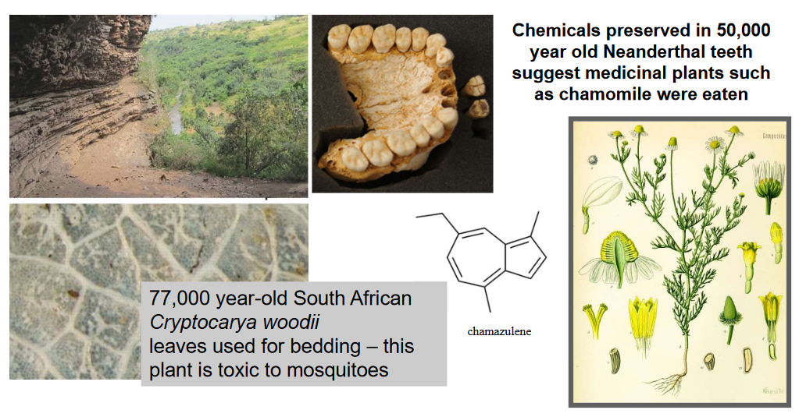
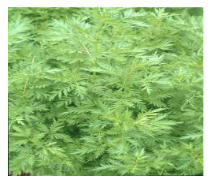
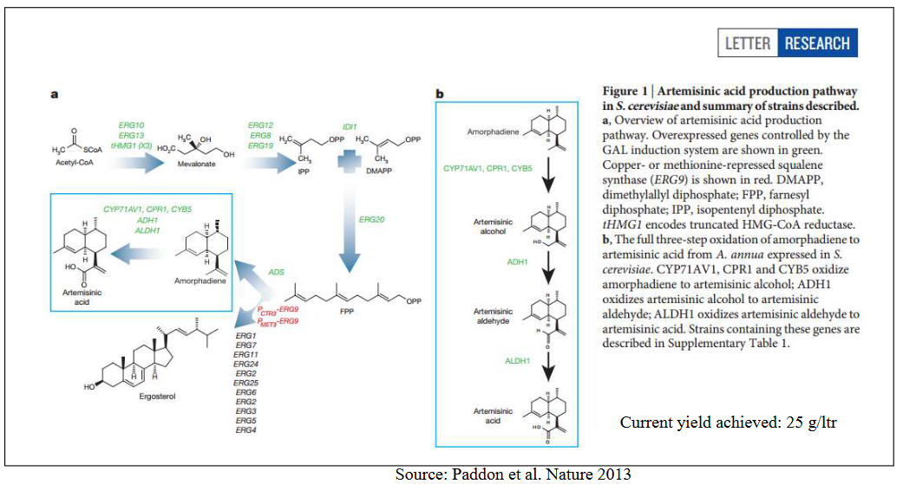
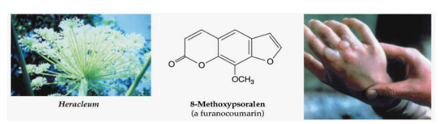
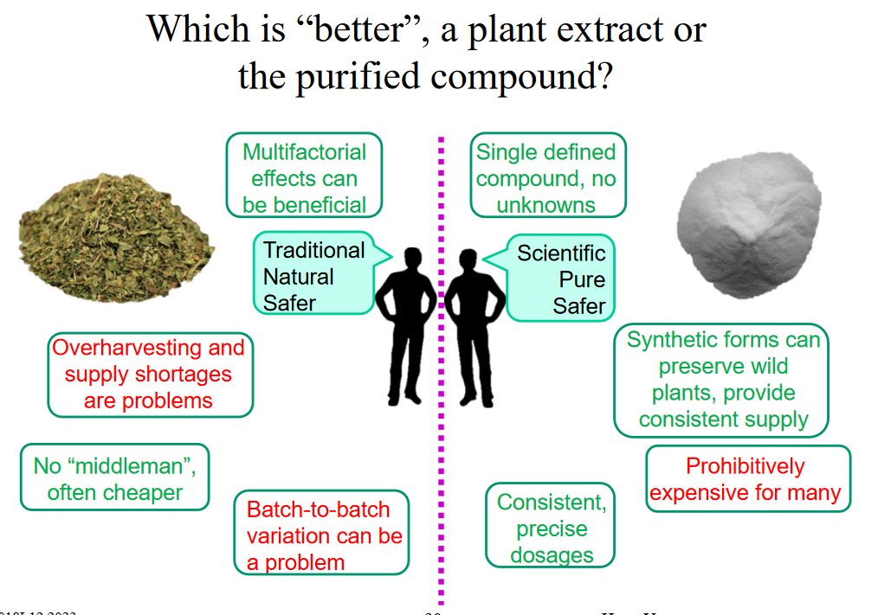
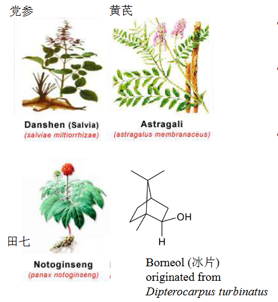
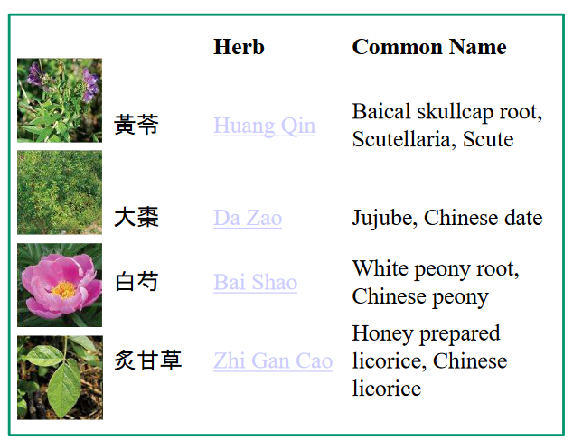
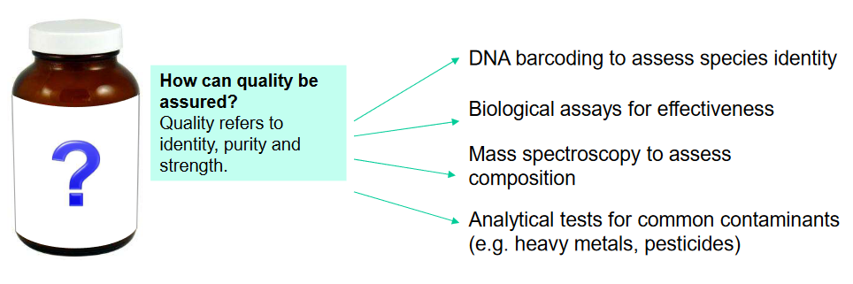
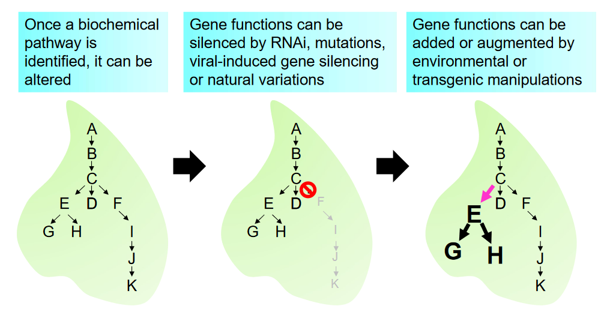

12 Plants as Medicine
Ever since the early days of human civilization, people have used plants as a sort of medicine for their ailments.
Materia medica, a term rooted in Latin, translates to “medical material” or “substance.” The historical use of medicinal substances dates back to ancient civilizations.
Around 1000 B.C., ancient Egyptian medicine already employed various herbs like garlic, opium, castor oil, coriander, mint, and indigo for medicinal purposes. This indicates an early recognition of the healing properties of plants and other natural materials.
One of the earliest comprehensive compilations of medicinal substances is found in the Sushruta Samhita, an Indian Ayurvedic treatise from the 6th century B.C. This text detailed 700 medicinal plants, 64 mineral-based preparations, and 57 animal-based preparations, reflecting a rich tradition of herbal knowledge.
In Chinese medicine, the Shennong Emperor’s Classic of Materia Medica, dating back to the 1st century AD, stands out. This manual lists around 365 medicines, with 252 of them derived from herbs, showcasing the Chinese understanding of the therapeutic potential of various plant-based substances.
The Greek physician Dioscorides made a significant contribution with his work “De Materia Medica” in the first century AD, becoming the first European treatise on the properties and uses of medicinal plants. With descriptions of over 500 plants, this compilation remained an authoritative reference for centuries.
In the medieval Islamic world, Muslim botanists and physicians expanded on this knowledge. For instance, in the 9th century, al-Dinawari documented over 637 plant-based drugs, contributing to the growing wealth of information on materia medica.
12.1 Traditional Medicine
Traditional medicine, at its core, is a fusion of philosophy and medicine, drawing on ancient wisdom and practices. One prominent example is Ayurvedic medicine, a system native to India that intertwines philosophy and the science of life.
The term “Ayurveda” stems from the Sanskrit words “āyus,” meaning ‘life,’ and “veda,” meaning ‘science.’ This holistic approach is grounded in the belief in the existence of five fundamental elements—earth, water, fire, air, and space—that form not only the universe but also the human body.
According to Ayurveda, the human body comprises seven primary constituent elements: blood, flesh, fat, bone, marrow, chyle, and semen. Each of these elements plays a vital role in the functioning of the body, reflecting a deep understanding of the interconnectedness of life.
Central to Ayurvedic philosophy is the emphasis on balance among three fundamental substances: wind or spirit (representing air), phlegm, and bile. These are seen as divine forces governing different aspects of life. Maintaining equilibrium among these forces is believed to contribute to overall health and well-being.
In essence, Ayurvedic medicine reflects a profound understanding of the elements shaping the universe and the human body. Its philosophy intertwines seamlessly with medicinal practices, emphasizing the importance of balance and harmony in the divine forces governing life. This holistic approach has endured through the ages, offering a unique perspective on health and healing.
Traditional Chinese Medicine (TCM) represents a sophisticated integration of philosophy and medical theory, encompassing intricate concepts such as Yin-yang, the Five Phases, the human body Channel, Zang Fu organ theory, and Qi.
In TCM, the theory is rich and complex, with each herb assigned specific characteristics. Herbs are classified based on temperature, ranging from extreme yin (cold) to extreme yang (hot), and they are further categorized by taste—pungent, sweet, sour, bitter, and salty. This classification forms the basis for understanding the herb’s therapeutic properties and how it interacts with the body.
The core principle of TCM herbal treatment is to restore the internal balance of Yin and Yang within the patient. Yin and Yang represent opposing forces that, when in harmony, contribute to a person’s well-being. The goal of herbal treatment is to rebalance these forces, addressing the root cause of health issues.
What makes TCM particularly unique is its approach to individualized medicine. Each prescription is essentially a carefully crafted cocktail of multiple herbs, each serving a distinct purpose. This tailoring allows practitioners to create personalized treatments, acknowledging the individual patient’s unique constitution and health needs.
In summary, Traditional Chinese Medicine offers a comprehensive approach to health, intertwining philosophy and intricate medical theories. The emphasis on balance, personalized prescriptions, and the integration of diverse concepts makes TCM a distinctive and holistic system that has been practiced and refined over centuries.
12.1.1 History of Using Plants as Medicines
From the 1800s to the present day, the pursuit of active compounds from plants has undergone significant changes and evolutions.
In the earlier centuries, there was a prevailing focus on the concept of “one molecule, one medicine.” Scientists sought to identify individual molecules within plants that could serve as effective medicines against various diseases. This reductionist approach aimed at isolating specific compounds for medicinal purposes.
As research advanced, a multitude of active compounds were successfully identified, each showing potential in addressing different health conditions. This marked a crucial phase in understanding the diverse therapeutic properties hidden within plants.
To ensure a sustainable supply of these plant-derived active compounds, scientists employed multiple approaches. These included methods for cultivating and harvesting plants, as well as developing techniques for extracting and synthesizing the desired molecules.
However, during a certain period, there was a shift in focus. Formulated medicine, which involves combining multiple compounds or herbs, was somewhat overlooked, with many active compounds being marketed and consumed as individual supplements rather than as part of a holistic medicine approach.
In recent times, there has been a renewed interest in formulated medicine. Researchers and practitioners are revisiting the concept of combining multiple compounds in specific formulations, acknowledging the potential synergies that can arise. This renewed interest suggests a shift back towards recognizing the value of traditional philosophies that considered the holistic nature of plant-based medicines.
In summary, the journey from the 1800s to the present in the quest for active compounds has seen shifts in focus, from isolating individual molecules to acknowledging the potential synergies in formulated medicines. The current resurgence of interest in formulated medicine reflects a recognition of the holistic approaches embedded in traditional philosophies and the importance of considering the complex interactions among various plant compounds.
12.1.2 Artemisin

Artemisinin, a significant terpenoid, was originally extracted from the Chinese medicinal herb Artemisia annua, which had been used for over a millennium to treat skin diseases and malaria.
Today, artemisinin is a vital drug employed in the treatment of multi-drug resistant strains of Falciparum malaria, a particularly challenging form of the disease. One notable aspect is its rapid turnover time, which may contribute to the parasite’s struggle to develop resistance. The World Health Organization (WHO) has recommended a switch to Artemisinin-based Combination Therapy (ACT) for malaria treatment.
The mechanism of action of artemisinin against malaria is fascinating. During a malaria infection, hemoglobin is consumed, releasing free heme—an iron-porphyrin complex. Artemisinin interacts with this free heme, creating high-valent iron-oxo species. This sets off a chain reaction, producing reactive oxygen radicals that inflict damage upon the parasite, ultimately leading to its demise.
Artemisinin production is primarily sourced from plantations, with ongoing efforts in breeding to enhance productivity. While chemical synthesis is feasible, it remains costly. Genetic Modification (GM) presents a promising avenue to increase artemisinin production, and breakthroughs include the use of yeast to produce artemisinic acid, a precursor to artemisinin, through synthetic biology.
The Bill Gates Foundation is actively supporting research aimed at large-scale production of artemisinin, with the goal of making it more accessible to developing countries. This highlights the global efforts to combat malaria and underscores the importance of innovative approaches, including genetic modification and synthetic biology, in addressing health challenges on a broader scale.
12.1.2.1 Discovery of Artemisinin

The discovery of artemisinin is a fascinating story that unfolded during the Vietnam War (1955-75). In 1969, the Chinese army initiated Project 523 to address the severe problem of malaria. The breakthrough came in 1972 when Tu Youyou’s research group identified artemisinin in the leaves of Artemisia annua, a medicinal herb. The drug derived from artemisinin was named Qinghaosu in Chinese.
Remarkably, artemisinin was just one among nearly 5000 traditional Chinese medicines. When tested against 2000 formulated medicines, it didn’t initially stand out. However, a literature review revealed that the traditional preparation of artemisinin, without heating, as documented in Ge Hong’s “Emergency Prescriptions Kept Up One’s Sleeve,” was a crucial detail. Further experimentation determined that solvent extraction was the most effective method.
This medicine played a pivotal role in the outcome of the Vietnam War, yet its significance remained relatively unknown outside of China until the 1980s. The discovery of artemisinin not only marked a turning point in the fight against malaria but also highlighted the potential treasures hidden within traditional herbal remedies. Tu Youyou’s dedication and the innovative approach to exploring ancient texts demonstrate the valuable intersection of traditional knowledge and modern scientific discovery.
12.1.3 Paclitaxel
Paclitaxel, a potent anti-cancer drug, originates from the terpenoids found in the bark of the Pacific yew tree (Taxus brevifolia). Discovered by the National Cancer Institute (NCI) in 1967, it is commercially known as ‘taxol’ or ‘abraxane’ and has been instrumental in treating various cancers, including lung, ovarian, breast, and head cancers. Its annual sales peaked at an impressive US$1.6 billion in 2000.
The mechanism of action of paclitaxel is intriguing—it binds to microtubules, preventing their breakdown and thereby halting cell division. This unique property makes it a valuable asset in the fight against cancer.
However, controversies surround paclitaxel, including ecological concerns due to the large demand for raw materials. Additionally, debates arise from academic research and commercial rights, with Bristol-Myers Squibb facing accusations of maintaining a ‘cancer monopoly.’ The generic name versus the commercial trademark also contributes to the discourse.
Over the years, the production of paclitaxel has undergone transformations. Initially sourced solely from the bark of the Pacific yew from 1967 to 1993, it later expanded to include needles of the tree and other Taxus species. A semisynthetic pathway, utilizing 10-deacetylbaccatin isolated from the European Yew’s needles, became an alternative. Presently, plant cell fermentation (PCF) is a common method for Taxol production, with PhytoBiotech being a major player. Looking ahead, there are prospects for paclitaxel production from fungi or even Escherichia coli (E. coli) through metabolic engineering—an exciting frontier in cancer drug development.
12.1.4 Ginsengs
Ginsengs, belonging to a genus of 11 slow-growing perennial plants with fleshy roots in the Araliaceae family, have gained prominence in traditional medicine. Notably, American ginseng (Panax quinquefolium) and Asian ginseng (P. ginseng) are consumed for their adaptogenic properties, serving as stress resistors, aphrodisiacs, nourishing stimulants, and treatments for sexual dysfunction in men. Notoginseng (P. notoginseng) is renowned for its hemostatic qualities, invigorating and blood-building effects.
Modern medical research has unveiled several beneficial properties of ginsengs. They exhibit antioxidant activity and demonstrate anti-carcinogenic effects. Laboratory studies on animals, encompassing both Asian and American ginseng, indicate enhanced libido and improved copulatory performance.
In a randomized, double-blind study, an extract of American ginseng showcased its effectiveness in reducing influenza cases among the elderly when compared to a placebo. However, it’s crucial to note that herbal-drug interactions have been reported, emphasizing the need for cautious use.
Ginsengs stand as a fascinating intersection of traditional wisdom and modern scientific validation, offering a spectrum of health benefits. From stress management to potential anti-cancer properties, ginsengs continue to capture the interest of researchers and health enthusiasts alike.
12.1.5 Digitoxigenin
Digitoxigenin, derived from Foxglove (Digitalis species), holds historical significance in the treatment of heart diseases. Discovered by the Scottish doctor William Withering in 1775 and released for medical use in 1785, digitalis has played a crucial role in cardiac care.
The mechanism of action of digitoxigenin is intriguing. This terpenoid blocks the sodium-potassium pump and enhances calcium release, leading to increased contraction of the heart muscle. This unique mechanism makes it a valuable asset in managing heart conditions.
However, it’s important to note that digitoxigenin, specifically in the form of digitoxin, can exhibit toxic effects. These may include anorexia, nausea, vomiting, diarrhea, confusion, visual disturbances, and abnormal heart rhythms. Additionally, caution is warranted as mixing digitoxigenin with other herbs could potentially lead to significant problems.
The story of digitoxigenin reflects the delicate balance between its therapeutic benefits and potential risks. As a foundational component in the history of cardiac medicine, it underscores the ongoing need for careful administration and monitoring when using potent herbal compounds for medical purposes.
12.1.6 Berberine
Berberine, prominently present in Huang Lian, has been recognized for its therapeutic applications in traditional medicine. Known for its efficacy against damp-heat syndromes, especially for intestinal and lung infections, Huang Lian is also applied topically for various skin diseases.
In the realm of cardiovascular health, berberine exhibits interesting effects. In low doses, it acts as a cardiac stimulant, enhancing coronary perfusion, while at higher doses in animal studies, it inhibits cardiac activity. Notably, it has shown promise in reducing high blood pressure.
Berberine’s antimicrobial properties make it a valuable asset in topical dressings and the treatment of diarrhea. Extensive testing has demonstrated its effectiveness against bacteria, yeasts, viruses, and amoebas, with varying levels of potency.
Beyond these applications, berberine serves as an anthelmintic, aiding in the expulsion of parasitic worms from the body. Recent findings have also highlighted its role in lowering cholesterol, employing a mechanism distinct from that of statin drugs.
12.1.6.1 Berberine in Singapore
Berberine, once a traditional remedy for newly born jaundice, faced a ban in Singapore in October 1978. This decision was influenced by the observation that immigrants from Southern China, who had a high incidence of G6PD deficiency, experienced more severe jaundice and kernicterus (brain damage due to jaundice) when berberine was used for infants with this deficiency.
The ban on berberine-containing products persisted until January 1st, 2013, when the Singapore government decided to permit the usage of Chinese Proprietary Medicines (CPMs) containing berberine. Subsequently, the importation of herbs containing berberine was allowed from 2016.
12.1.6.2 Applications of Berberine to Diabetes
Berberine has emerged as a promising element in the management of diabetes, particularly type 2 diabetes (T2DM). Through its impact on insulin receptors (InsR), BBR has shown the ability to enhance insulin signaling in human cell lines and animals.
Studies have revealed that BBR not only increases InsR mRNA transcription but also elevates protein expression, and these effects are observed in a dose- and time-dependent manner. Multiple trials have been conducted to explore BBR’s impact on blood glucose levels and InsR expression in individuals with T2DM.
In a notable trial involving 97 patients reported by Zhang et al. in 2010, BBR demonstrated substantial positive outcomes. The results showed a significant decrease in fasting blood sugar by 26%, HbA1c by 18%, triglycerides by 18%, and serum insulin by 28% after BBR therapy. Additionally, liver enzymes exhibited a notable decline following BBR treatment.
12.1.7 Psoriasis and PUVA Treatments

Psoriasis, a skin disorder characterized by inflammatory patches covered in silvery-white scales, particularly the common plaque psoriasis, is known for its immune-mediated nature. This condition triggers an accelerated growth of skin cells, with new cells maturing in just 3 to 6 days instead of the usual 28 to 30 days.
One of the treatments employed for psoriasis is PUVA (Psoralen plus Ultraviolet A) therapy. PUVA involves the use of Methoxypsoralen, a photosensitizing medication, in combination with ultraviolet A (UVA) radiation. The treatment induces inflammation and redness in the skin. Interestingly, this deliberate damage hinders the proliferation of skin cells, effectively reducing the formation of psoriasis plaques.
12.1.8 Sustainable production of Plant Compounds

Achieving sustainable production of specific compounds derived from plants involves a multi-faceted approach. Firstly, traditional breeding methods play a crucial role in enhancing productivity. Through careful selection and cultivation of plants with improved traits, researchers aim to develop varieties that yield higher quantities of the desired compounds. Additionally, genetic modification (GM) techniques are employed to boost biosynthesis, introducing genetic alterations that enhance the production of specific compounds.
Plant tissue culture or cell culture represents another avenue for sustainable production. By cultivating plant tissues or cells in controlled environments, researchers can create a consistent and reproducible source of the targeted compounds. Meanwhile, chemical synthesis is considered if it proves cost-effective while maintaining the desired quality and efficacy of the plant-derived compounds.
Semi-synthetic pathways offer a hybrid solution, utilizing sustainably produced precursors to create compounds through a combination of natural and synthetic processes. Lastly, the transfer of biosynthetic pathways to bacteria or yeast, optimized through synthetic biology approaches, represents a cutting-edge strategy for achieving efficient and scalable production systems.
One more thing to note is that there’s really not any sort of supervision when it comes to over the counter herbal medicines.
12.2 Herbal Medicine Preparation
Several arguments support the use of herbal preparations, particularly in the form of formulated medicines:
Firstly, herbal preparations often exhibit multiple functions due to the presence of different components within a single herb. Unlike isolated compounds, these preparations leverage the synergistic effects of diverse compounds, allowing for a more holistic approach to health.
Additionally, combining multiple compounds from various herbs in a formulated medicine may enhance their effectiveness. The synergistic interactions among different herbal ingredients can contribute to a more potent therapeutic effect, addressing health concerns from various angles.
Moreover, the process of preparing herbal formulations can lead to secondary reactions, resulting in the formation of additional bioactive compounds. While these compounds may be challenging to characterize and quantify, they can contribute to the overall therapeutic efficacy of the herbal preparation. This complexity in composition adds layers of potential benefits that extend beyond the individual components.
12.2.1 Most Diseases Have Various Origins
Addressing complex and chronic conditions often requires a nuanced approach, as not all ailments can be effectively treated by single compounds. Conditions such as AIDS, diabetes, metabolic syndrome, obesity, and Alzheimer’s exhibit pleiotropic characteristics, involving multiple interconnected factors. Attempting to address these multifaceted conditions with a single compound may prove insufficient, given the intricate nature of their underlying mechanisms.
In contrast, many traditional medicines are crafted from a combination of several plants, suggesting that their effectiveness may stem from the synergy of multiple factors working in concert. The intricate balance of various compounds within these herbal formulations may offer a more comprehensive and holistic solution to the complexity of chronic diseases.
12.2.2 Regulations for Herbal Medicine
The regulatory landscape for formulated medicines, particularly herbal drugs, has undergone significant changes, exemplified by modifications introduced by the U.S. Food and Drug Administration (FDA) in 2004. One notable adjustment was the removal of the requirement for disclosing a single active component in herbal drug approval processes. Instead, the FDA emphasized the importance of quality control and ensuring therapeutic consistency in these formulations.
A landmark moment in this evolving regulatory framework occurred in 2006 when the FDA approved the topical use of a green tea extract for combating the human papillomavirus (HPV). This approval marked a significant milestone as the first instance of an herbal drug receiving FDA recognition for its efficacy in treating a specific condition.
As of now, the FDA has received approximately 450 Investigational New Drug (IND) and pre-IND applications for botanicals. This influx of applications underscores the growing interest and recognition of herbal medicines within the regulatory sphere. The emphasis on quality control and therapeutic consistency aligns with a broader acknowledgment of the potential benefits and complexities associated with herbal formulations.
12.2.2.1 Example: Danshen Dripping Pill

The movement towards FDA approval for formulated herbal medicines is exemplified by the case of the Danshen Dripping Pill, developed by Tianjin Tasly Pharmaceutical. This cardiotonic pill is composed of three herbal ingredients and one synthetic phytochemical, traditionally utilized for the treatment of angina and coronary heart diseases.
The regulatory journey of the Danshen Dripping Pill began with the acquisition of an Investigational New Drug (IND) designation in the United States in 1997. Subsequent phases of clinical development followed this initial step. Phase I trials focused on establishing the safety of the pill in healthy human subjects. In 2010, Phase II trials provided evidence of its efficacy in treating chronic stable angina.
Moving forward, the Phase III clinical trial commenced in 2015 and is currently ongoing. This phase aims to further evaluate the safety and effectiveness of the Danshen Dripping Pill in a larger and more diverse patient population. Notably, the rights to this herbal medicine have been licensed to Arbor Pharmaceuticals, a development that signifies external investment and support for its continued development.
12.2.2.2 Example: Huang Qin Tang

Huang Qin Tang, with a history of nearly 2000 years in treating gastrointestinal symptoms, is a herbal formulation that consists of four plants, each contributing to its therapeutic effects. Although traditionally known for its gastrointestinal benefits, Huang Qin Tang has demonstrated a weakness in directly inhibiting tumors. However, it exhibits a remarkable ability to enhance the anti-tumor activity of various chemotherapies with a broad spectrum through multiple mechanisms of action, concurrently reducing toxicity.
The formulation’s potential in cancer therapy has been substantiated by positive results in a Phase II clinical trial conducted by Yale Medical School, specifically for the treatment of liver cancer. This marks a significant step in validating the efficacy and safety of Huang Qin Tang as an adjunctive therapeutic approach in combination with conventional chemotherapies.
12.3 Traditional Chinese Medicine and Mainstream Medicine
The integration of traditional medicine into mainstream healthcare is a nuanced process driven by several key factors. One pivotal aspect is the accumulation of scientific evidence that supports the efficacy of traditional remedies and sheds light on the underlying mechanisms of their therapeutic actions. Rigorous research, including clinical trials, plays a vital role in substantiating the effectiveness of traditional medicine, contributing to its acceptance in mainstream healthcare practices.
Quality control measures are another critical element in facilitating the transition of traditional medicine. The implementation of the 6Ps—Good Agricultural Practice (GAP), Good Clinical Practice (GCP), Good Laboratory Practice (GLP), Good Storage Practice (GSP), Standard Operating Procedure (SOP), and Good Manufacturing Practice (GMP)—ensures standardized processes from cultivation to production. These practices not only enhance the consistency and reliability of herbal products but also align traditional medicine with the rigorous standards expected in mainstream healthcare.
Addressing concerns related to the safety of traditional medicine is paramount for its acceptance. This involves a thorough assessment of potential toxicity and interactions with conventional drugs. By conducting comprehensive research and establishing testing protocols, the aim is to identify and mitigate any risks associated with the use of herbal remedies, thereby ensuring their safe integration into mainstream healthcare.
Furthermore, fostering collaboration between traditional healers and modern healthcare professionals is instrumental in creating a holistic approach to patient care. This interdisciplinary collaboration allows for the exchange of knowledge and expertise, leveraging the strengths of both traditional and modern medicine to provide patients with a diverse and comprehensive set of treatment options.
12.3.1 Toxicity from Herb Contamination
The case study involving toxicity due to herb contamination highlights the potential risks associated with herbal supplements and the importance of stringent quality control measures. In this instance, two women presented at a hospital with symptoms such as nausea, vomiting, and irregular heartbeats after using a dietary supplement intended for “systematic cleaning of the body.” Laboratory tests confirmed digitalis toxicity, prompting an investigation by the U.S. Food and Drug Administration (FDA).
The FDA’s inquiry led to the identification of the source of contamination – raw herbs imported from Germany. The bulk plantain used in the supplement was found to be contaminated by Digitalis lanata, a plant known for its cardiac glycoside content, including compounds like digitoxin. The discovery had widespread implications, affecting more than 150 companies that had utilized approximately 2.7 tons of the contaminated plantain in various herbal products.
12.3.2 Importance of Regulation
The importance of quality control (QC) for medical herbs cannot be overstated, considering the various factors that can significantly impact the composition and efficacy of herbal products. Genetic variation within plant species can lead to differences in the presence and concentration of bioactive compounds. An illustrative example is Stephania tetrandra, where only a specific variant among more than ten may contain the desired compound tetrandrine. This underscores the need for precise identification and selection of plant sources to ensure consistency in herbal formulations.
Misidentification of herbs poses a serious risk to consumers. An infamous case involved Aristolochia fangchi, which contains aristolochic acid, a nephrotoxic compound. The inadvertent use of this herb, instead of the intended Stephania tetrandra, resulted in severe kidney failure in some cases. This highlights the critical role of accurate plant identification in preventing harmful consequences.
The complexity of nomenclature in traditional medicine further complicates matters. Chinese medical herbs, for instance, may have one name referring to several species, as seen with GuanZhong, which encompasses 31 different species. Additionally, a single species might be referred to by different names, exemplified by TianQi. This linguistic variability emphasizes the necessity for standardized and precise botanical taxonomy to avoid confusion in the formulation and prescription of herbal medicines.
Adulteration, the intentional or unintentional inclusion of incorrect or inferior substances, is another challenge in the herbal industry. Rigorous QC practices, including authentication of raw materials and regular testing, are crucial for detecting and preventing adulteration. Companies that prioritize and implement robust QC measures not only safeguard consumer health but also position themselves favorably in the market by establishing trust and reliability.
12.4 Standardizations and Quality Control of Herbal Medications


The above process - metabolic engineering - has some consequences as a whole. We don’t know how under or over-expressing certain proteins (e.g., transcription factors) will affect other processes in the cell. Likewise, if we do things inside a yeast cell, we must often make a new pathway.